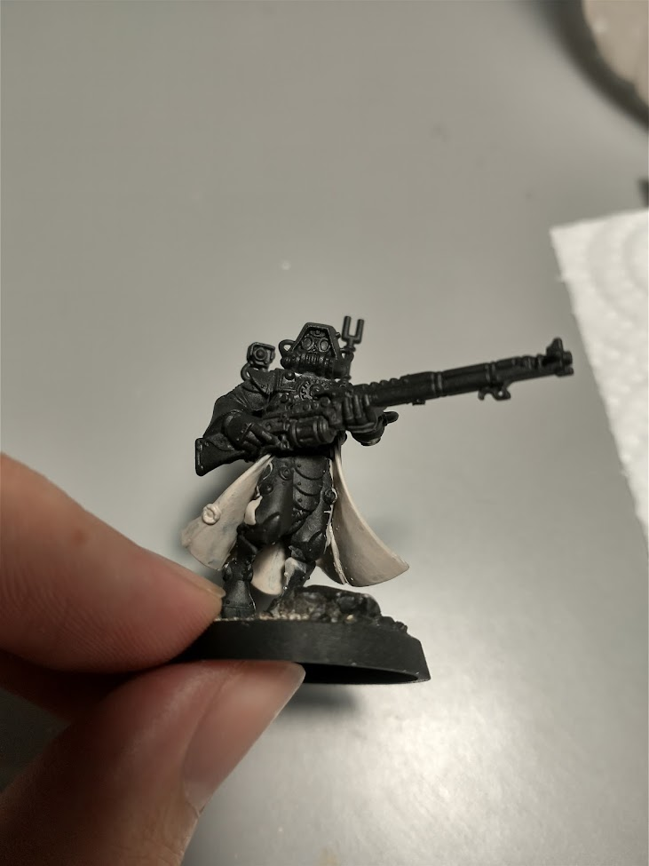
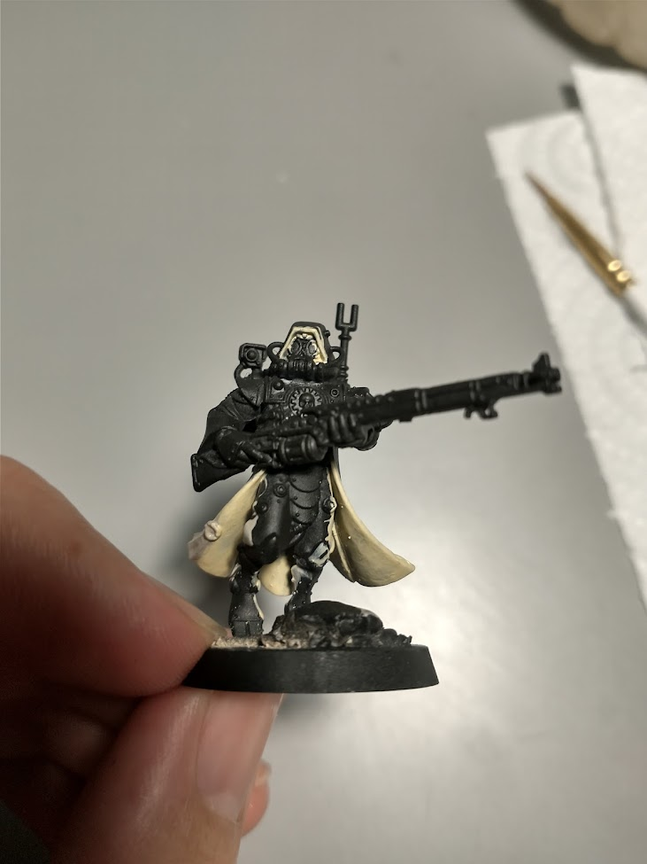
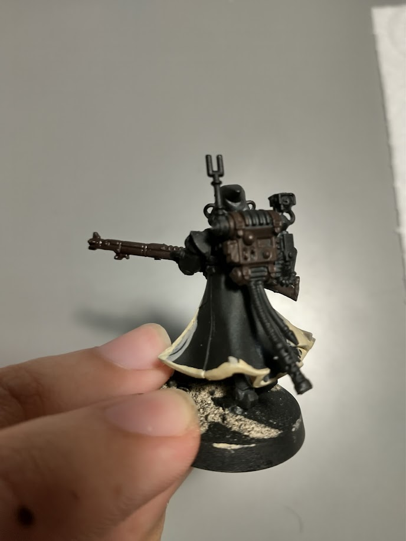
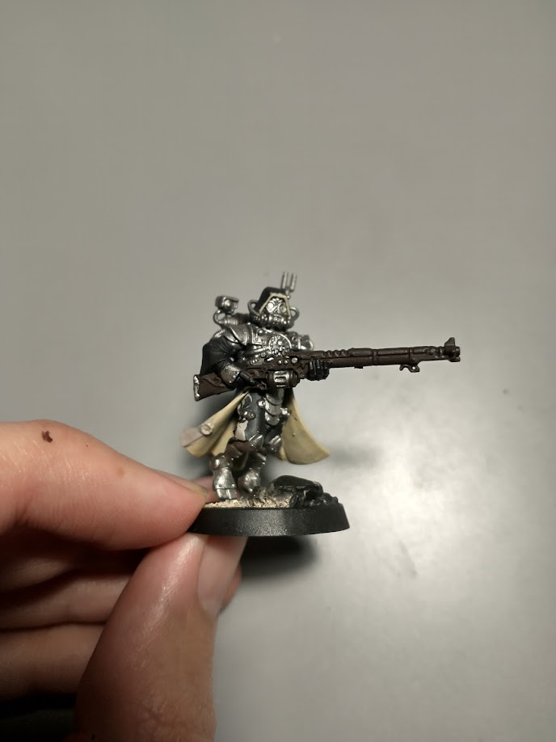
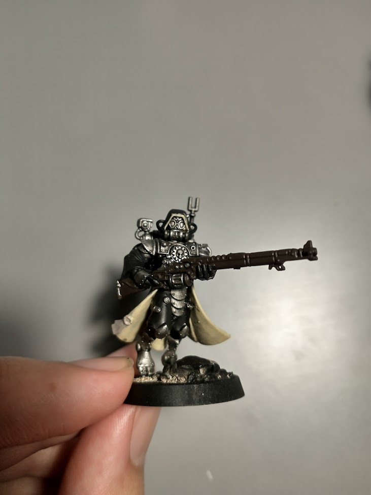
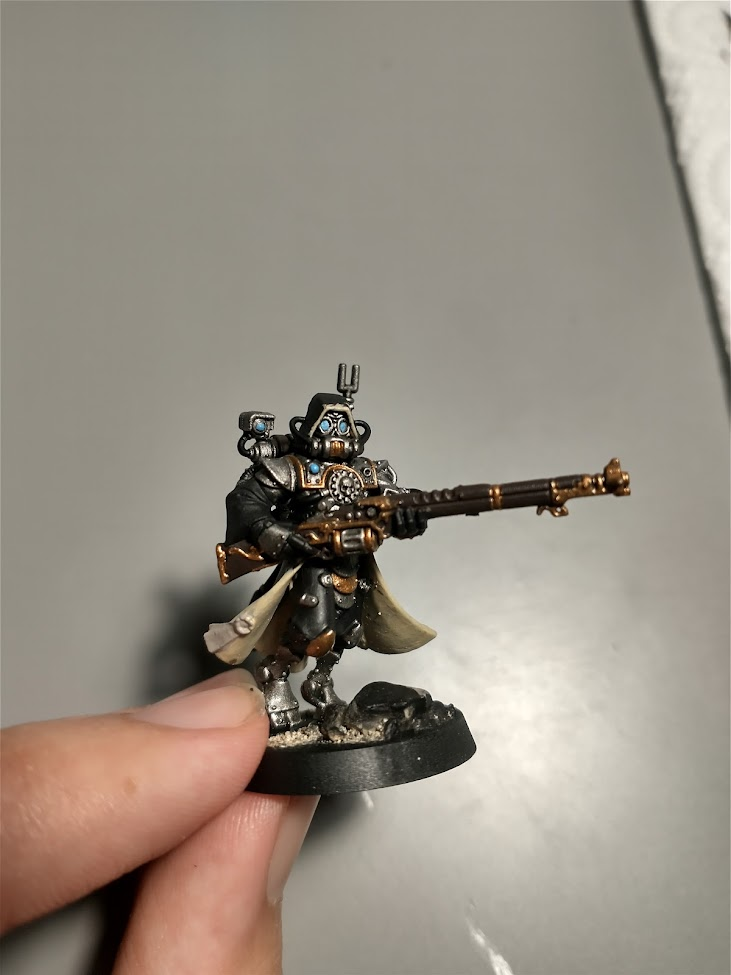
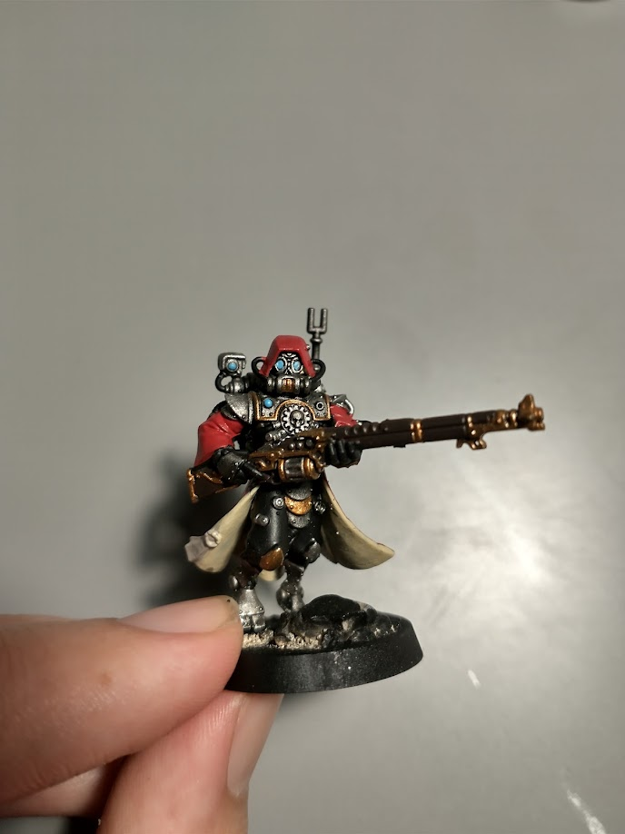
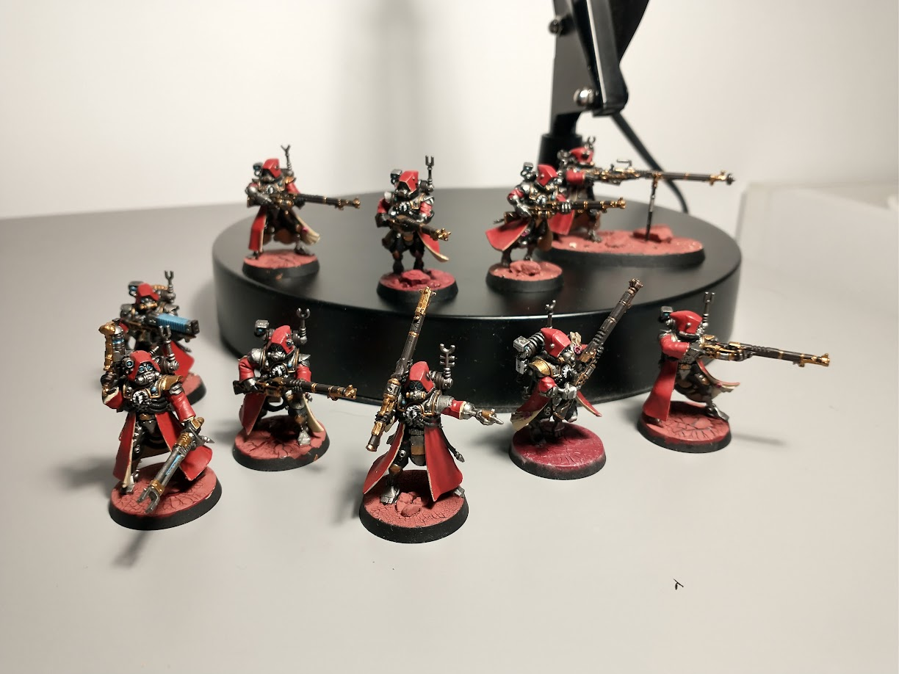

Jorge Segarra
First blog post of the year and probably the last one 👏. A few weeks ago I saw how a couple of friends played against each other in a Warhammer 40k match, it looked pretty fun, so I decided to join them in the hobby. And that's why I'm here, writing how I painted my first Warhammer miniature (to be honest I painted a couple of them 10 years ago, but those don't count).
So, even that this is not related to programming or videogames, I really wanted to show the process, and that's what you will find in this post, me showing the process I followed to paint my "first" Warhammer miniatures, this is not intended to be any kind of tutorial.
I started by picking an army and looking at color schemes. After long hours of looking at tutorials/ideas I went for Adeptus Mechanicus army with the "default" color scheme of Mars Forge world, with that set I was ready to start painting my minis, oh, wait, I had to assemble the minis before, but we don't speak about that here, I really don't like that part of the hobby 😢.
With the model assembled and primed I was really ready to start painting my Skitarii Ranger. I started by aplaying a thin coat of Rakarth Flesh on the interior of the robes but also on the parchment of seals.
 Skitarii Ranger - Rakarth Flesh.With the first layer of Rakarth Flesh set and dried, the next step was to apply a coat of Ushabti Bone over the parts of the robe that we painted in the previous step, I didn't paint the seals because some of them are placed directly placed over the robes.
 Skitarii Ranger - Ushabti Bone.For this model especially it was very helpful to paint these two parts at the beginning because it can get very meshy with the interiors of the robe, and in case that I painted over something it would have been over an unpainted place.
With everything dried up, I started to paint the leather and wood parts with Rhinox Hide like the weapon and the backpack.
 Skitarii Ranger - Rhinox Hide.The next part was to paint all the iron bits with Leadbelcher, this is the most time consuming part, since the model has a lot of metal plates, but here is where you start to see the scheme popping up, so it was very exciting!
 Skitarii Ranger - Leadbelcher.Next, I painted the black parts, if you haven't messed up with your paints too much you barely have to paint anything here (if you primed black, for sure), but in my case I had to paint again the wires, clothes, and gloves of my ranger with Abaddon Black.
 Skitarii Ranger - Abaddon Black.After that, I followed with the process, painting the lenses. In my case with Lothern Blue, this step was quite fast, but I had to be really careful, because those lenses are quite small, and painting out at this stage would mean having to paint again over the mistake.
 Skitarii Ranger - Lothern Blue.
Skitarii Ranger - Lothern Blue.
We are almost done and this last three steps are the ones that really make the model to stand up, the first one was to paint the brass parts with Brass Scorpion, I really like to paint the details of the weapons but also random plates of armor.
 Skitarii Ranger - Brass Scorpion.As you can see the model is starting to pop out, we are missing the most eye-catching part, which is the robe, for that, I painted it with Mephiston Red.
 Skitarii Ranger - Mephiston Red.So, the last step, was to cover the metal, lenses, wood, leather and black parts with a wash of Nuln Oil, this really helps shaping the shadows of the edges.
 Skitarii Ranger squad.So that was it, I really enjoyed the process, even do I really have to work on the bases of the miniatures, after painting 10 of them, I really noticed that changing the order of some steps made thins easy and more natural.